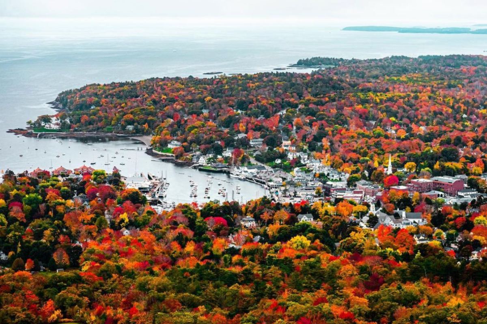

Your New England Journey
Boston (Oct 11-12)
Top Attractions


Fenway Park
Home of the Boston Red Sox and America's most beloved ballpark.
Boston Harbor
Take a scenic harbor cruise or explore the waterfront attractions.
Daily Itinerary
Sat, Oct 11
- Arrive 10am, get settled at hotel (e.g., The Godfrey Hotel or Marriott Copley Place)
- Walk the Freedom Trail (start at Boston Common, end at Faneuil Hall)
- Explore Beacon Hill & Boston Common
- Dinner in North End: Giacomo's or Mamma Maria (Italian)
- Optional: Mike's Pastry for dessert
Sun, Oct 12
- Morning: Fenway Park tour or stroll Charles River Esplanade
- Brunch at Tatte Bakery or The Friendly Toast
- Afternoon: Museum of Fine Arts or shopping on Newbury Street
- Optional: Boston Harbor cruise
- Dinner: Neptune Oyster or Legal Sea Foods (seafood)
Salem (Oct 13)
Top Attractions
Salem Witch Museum
Learn about the infamous Salem Witch Trials of 1692.
The Witch House
Tour the home of Judge Jonathan Corwin from the witch trials.
Daily Itinerary
Mon, Oct 13
- Drive to Salem (~45 min)
- Salem Witch Museum, The Witch House, Peabody Essex Museum
- Lunch at Turner's Seafood
- Explore Essex Street Pedestrian Mall
- Optional: Evening ghost tour
- Overnight in Salem or nearby coastal town (e.g., The Hotel Salem)
Coast of Maine (Oct 14)
Top Attractions

Maine Harbor
Explore the beautiful coastal harbors of Maine.
Portland Head Light
Visit Maine's iconic lighthouse in Cape Elizabeth.
Daily Itinerary
Tue, Oct 14
- Drive to Portland, ME (~1.5 hrs)
- Explore Old Port district (shops, cobblestone streets)
- Visit Portland Head Light (Cape Elizabeth)
- Lunch at Eventide Oyster Co. or Duckfat
- Optional: Detour to Kennebunkport
- Dinner at Fore Street (farm-to-table)
White Mountains, NH (Oct 15)
Top Attractions
Franconia Notch State Park
Hike Flume Gorge and Artist's Bluff for stunning views.
Mount Washington
Conquer the highest peak in the Northeast.
Daily Itinerary
Wed, Oct 15
- Drive to White Mountains (Kancamagus Highway)
- Hike Franconia Notch State Park (Flume Gorge, Artist's Bluff)
- Lunch at Polly's Pancake Parlor (Sugar Hill, NH)
- Scenic drive, leaf-peeping
- Overnight in Lincoln or North Conway (cabin/lodge)
NH/VT Border (Oct 16)
Top Attractions
Woodstock, VT
Explore this quaint town with covered bridges.
Sabbaday Falls
Beautiful waterfall hike in the White Mountains.
Daily Itinerary
Thu, Oct 16
- Hiking: Mount Washington, Sabbaday Falls, or Diana's Baths
- Explore Woodstock, VT (quaint town, covered bridges)
- Lunch at Mon Vert Café (Woodstock, VT)
- Overnight in NH or near VT border
Mystic, CT (Oct 17)
Top Attractions
Mystic Seaport Museum
America's leading maritime museum with historic ships.
Essex Village
Charming riverside village perfect for strolling.
Daily Itinerary
Fri, Oct 17
- Drive to Stowe, VT (scenic photo ops: Smugglers' Notch, Green Mountains)
- Brunch at Butler's Pantry (Stowe, VT)
- Drive to Mystic, CT (~3 hrs)
- Visit Mystic Seaport Museum or stroll Essex Village
- Dinner at S & P Oyster Restaurant (Mystic, CT)
- Overnight in coastal Connecticut
Newport, RI & Boston (Oct 18-19)
Top Attractions
The Cliff Walk
Scenic 3.5-mile walk along Newport's coastline.
Newport Mansions
Tour the opulent Gilded Age summer homes.
Daily Itinerary
Sat, Oct 18
- Drive to Newport, RI (~1 hr)
- Walk the Cliff Walk, tour Newport Mansions
- Lunch at The Mooring Seafood Kitchen & Bar (Bowen's Wharf)
- Drive back to Boston (~1.5 hrs)
- Final dinner: Trillium Brewing or Night Shift Brewing
Sun, Oct 19
- Early flight (9am) – depart with a camera full of foliage and memories!